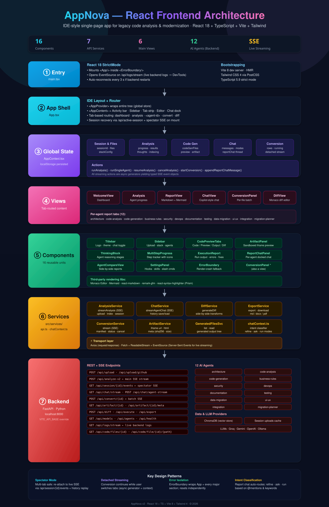

IDE-style single-page app for legacy code analysis & modernization

At-a-glance diagram — see layers below for detail
src/main.tsx — Bootstrap + live log stream
<App/> inside a root <ErrorBoundary/>EventSource on /api/logs/stream — streams backend logs into DevToolsVITE_API_BASE (defaults to http://localhost:8000)src/App.tsx — IDE-style layout + tab router
The root wraps everything in AppProvider, then renders AppContent:
a VS Code–like layout with Activity bar, collapsible Sidebar, Tab strip, Editor area, and a right-docked Chat panel.
dashboard
analysis
<agent-id>
convert
diff
docked panel
/api/active-session and, if an analysis is running,
reattaches to /api/session/{id}/events — a spectator SSE stream that replays buffered history and then forwards live events.
src/contexts/AppContext.tsx — single source of truth, localStorage persisted
sessionId · files · filePaths · stackConfig (UI / API / DB / Cloud)
selectedAgents · progress · results · thoughts · indexingStatus · interrupt flags
codeGenFiles (manifest) · live per-file stream · preview · artifact metadata
messages · mode (ask · plan · agent) · modelOverride · per-agent reportChat threads
rows · running · totalBatches · targetStack · concurrency · statusLine
Stream /api/analyze-v2; incremental progress updates with AbortController
Same stream scoped to one agent — supports force-rerun & refine
Resumes an interrupted run for pending agents only
Aborts the current stream cleanly
Detached per-file conversion stream (survives tab switches)
Pushes messages into a per-agent chat thread
Tab-routed content regions
Dashboard with overview stats, agent cards, step-by-step guide
Running / queued agents with per-agent thought streams
Markdown report with Mermaid diagrams, syntax highlighting, export + docked chat
Copilot-style streaming chat with code extraction, execution, attachments
Per-file batch converter with progress, filters, concurrency controls
Monaco diff editor + file tree for generated-vs-original comparison
src/components/ — 16 reusable units
Logo · theme toggle · chat toggle
Upload (zip/GitHub) · stack config · agent multi-select · Generate
Code / Preview / Output / Diff tab set for code blocks
Sandboxed iframe viewer for UI/UX agent HTML artifacts
Expandable view of agent reasoning stages
Step-by-step progress tracker with icons & durations
Run output · errors · fix suggestions · deploy hints
Per-agent docked chat with intent classifier
Side-by-side section comparison of two agent reports
Hooks · skills · slash-command reference
Class component fallback with reset for render crashes
Reused as both a view and component
src/services/api.ts · chatContext.ts
streamAnalysis (SSE) · upload · index status · session state
streamAgentChat (SSE) · history save/load
generateDiff — side-by-side transformations
Export report as markdown, docx, pdf
stream · manifest · status · cancel (idempotent)
iframe URL · raw HTML · metadata (sha256, size)
List & read generated output tree
Intent classifier: refine · ask · run modes
FastAPI · Python · localhost:8000 (VITE_API_BASE override)
Vector store for code indexing
In-memory + file cache
Groq · Gemini · OpenAI · Ollama (switchable)
Multi-tab safe — the app re-attaches to live SSE via /api/session/{id}/events, which replays buffered history before forwarding live events.
Conversion keeps running while the user switches tabs: the async generator lives in AppContext, not in the view.
ErrorBoundary wraps the App root plus every major section, so a single render crash never takes down the whole UI.
Report-chat input auto-routes to refine, ask, or run based on @mentions, slash commands, and keyword heuristics.